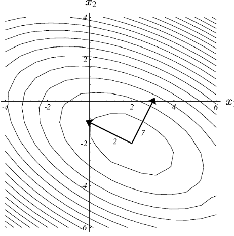
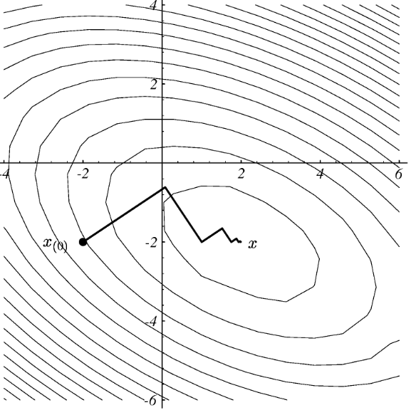
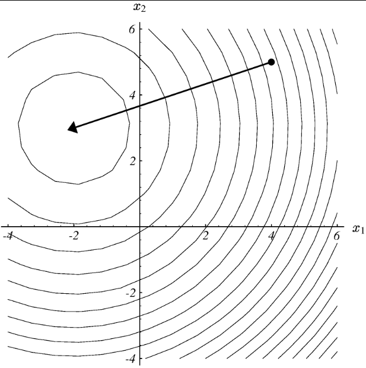

20261119 - Preconditioning¶
Final presentation¶
We’ll do them all on Thursday December 3rd
I’ll have a sign up sheet for order
Should be 3 minute
Need to take less than 5 minutes per presentation to fit into the class time
2 minutes as
Quickly cover
What you did do?
How did the contribution go? (any major issues)
What did you learn in the process?
Preconditioning Motivation¶
Iterative solvers for linear systems will often struggle to find good approximations for many problems.
They’ll always get to the exact solution (numerical precision permitting)
Not always as fast as we might want
To assist them, we use preconditioners to modify the matrix/problem to make it easier for them.
Many of the illustrations come from An Introduction to the Conjugate Gradient Method Without the Agonizing Pain by Shewchuck, which is an excellent intuitive guide to how CG (and Krylov subspace solvers in general) work.
These illustrations only apply for symmetric positive definite matrices
But the intuition is applicable to more general matrices
Solving as Minimization Problem¶
One way of looking at iterative linear solvers is to see them trying to solve a minimization problem
Minimization problems can often be thought of trying to find the lowest point on some surface

The eigenvectors of \(A\) represent axes of the ellipsoid
The magnitude of the respective eigenvalues set the radius on each axes
Note that the narrowness of the ellipsoid is due to the ratio of eigenvalues, not the magnitudes themselves
This magnitude is known as the condition number of the matrix
For this ellipsoid, the condition number is 3.5
If we attempted to apply gradient descient (which is basically Richardson’s iteration, but a specific form of \(\omega\)), then each iteration would look like this

The iterations just bounce back and forth between the walls of the “canyon”
It makes consistent progress towards the exact solution, just not as fast as we want
Reminder, this is with a condition number of 3.5
Condition number of unconditioned “real” problems can be in excess of \(10^20\)
E.g. a really narrow canyon
The goal of preconditioning is to make these canyons more forgiving.
For example, if we made all the eigenvalues the same size, we’d get the exact solution in a single step

Main point: You can have the nicest, most efficient iterative method in the world, but if you’re preconditioning sucks, it’ll be very slow (or not work at all)
Preconditioning¶
Preconditioning is the act of creating an “affordable” operation “\(P^{-1}\)” such that \(P^{-1} A\) (or \(A P^{-1}\)) is is well-conditoned or otherwise has a “nice” spectrum. We then solve the system
(which are “left” and “right” preconditioning, respectively).
The preconditioner must be applied on each iteration.
It is not merely about finding a good initial guess.
There are two parts that make a good preconditioner, often at odds with each other
We want \(P^{-1}\) to be “good”
We want \(P^{-1}\) to be cheap to create and to apply
For “goodness”, the best would be that \(P^{-1} = A^{-1}\)
This obviously directly solves the problem
But, as previously discussed, getting that is really expensive
The trick for preconditioning is to find \(P^-1\) which gets close to \(A^{-1}\), but is actually inexpensive to use
Note that “close to \(A^{-1}\)” is quite hand wavy; there are cases where what is intuitively “closer” actually results in worse performance for the iterative solver
Selecting/building preconditioners which are effective and efficient is a bit of an art
Classical methods¶
Jacobi¶
The simplest possible preconditioner is Jacobi:
where \(D\) is the diagonal of \(A\).
Pros:
It is very cheap to build and apply.
Often can get the diagonal of a matrix-free method without too much difficulty
Very parallel scalable
For row/column based distribution, each rank holds it’s own diagonal, therefore no communication necessary
Cons:
Not as “good” as other methods for improving iterative solver performance
Gauss-Seidel¶
Gauss-Seidel is
where \(L\) is the (strictly) lower triangular part of \(A\).
The upper triangular part may be used instead, or a symmetric form
Pros:
Usually gets better iterative solver performance
Computing inverse of lower triangular matrix quite straight forward
Cons:
Significantly more expensive than Jacobi for creating and applying
Not sparse (inverse of sparse matrix is generally not sparse)
Incomplete Factorization¶
Primary issue with factorization for large problems was sparsity/fill-in
We have some control over the sparsity of the factored matrices
But still usually somewhat dense
Also sparsity concerns may directly conflict with stability concerns
Observation: Many of the components of the factorization are small and probably insignificant
What if we just stored part of the factorization?
This is the idea behind incomplete factorization (e.g. ILU and incomplete Cholesky)
Open question: How do we select which components to keep or throw away?
Two popular solutions
Select the sparsity pattern ahead of time and only fill in those values
Compute all values, but only keep ones which exceed some threshold (small) value
For high performance computing, the first is the most popular one
Don’t need to compute all the values
Get tight control of the sparsity and necessary communication
How do we specify the sparsity pattern to use?
Often this is chosen to match the sparsity pattern of the original matrix \(A\), or some multplication factor of \(A\)
This is often denoted as ILU(\(k\)), where the sparsity pattern matches the sparsity of \(A^{k+1}\)
So ILU(0) (most popular choice) means we just use the same sparsity pattern as \(A\)
Pros:
Generally quite good preconditioner (we’re doing a direct approximation of \(A^{-1}\))
Cheaper to apply than Gauss-Seidel (more sparse matrix to apply)
Cons:
The approximation is ad-hoc
This is especially true for the pre-selected-sparsity variant
Performance can be inconsistent as a result (even when trying to solve similar problems)
Still expensive to create and apply
It effectively doubles the matrix-vector products necessary to solve the system
Note though that the application is cheaper than the creation
Problem-Specific¶
If you can exploit knowledge about your specific problem to create a preconditioner, it’s often good to do so
You’ll explicitly target the intricacies of the problem
Can narrow the expense of the preconditioning to only the area that it’s needed
Example: Compressible fluids flow
At low mach numbers, the speed of sound is much faster than the speed of the fluid flow
This often results in high condition numbers
The eigenvalues associated with the acoustics are much larger than those associated with the fluid velocity
A preconditioner design could seek to (nearly) exactly compute the acoustics with a simplified problem
e.g. solve for the pressure and temperature while freezing the fluid velocity
Said preconditioner has many advantanges
This problem is much smaller to solve (cuts the size of the preconditioner problem by at least 3/5)
By reducing to just the pressure, we can exploit the behavior of just that system
Pressure equations can be formulated as a Poisson equation, which has many efficient solving methods not applicable to the full fluid flow equations
We explicitly reduce the largest eigenvalues of the system (which we know are associated with the acoustics)
Multigrid methods¶
I don’t have enough time to describe them well, but they should 100% be mentioned
Basic idea:
Let’s call the original problem the “fine” problem
Say we define a “coarse” problem, which is similar to the “fine” problem, but much smaller (and thus cheaper to solve)
And say we have a way of transfering solutions/vectors from the “fine”->”coarse” problem and vice versa
What if used the inverse of the “coarse” problem as a preconditioner for the “fine” problem?
o where
\(S\) are projection operators from the coarse to fine space
Size of
\[A_\text{coarse}\]is much smaller than the size of
\[A_\text{fine}\]
Details make multigrid methods less of a universal approach, but can be incredibly effective for some problems
For example, parabolic PDEs (e.g. the heat equation) work really well with multigrid methods
Domain Decomposition¶
In parallel, we’ve already decomposed our problem across multiple ranks.
This decomposition was done with problem behavior in mind
What if we used that to form preconditioners?
Effectively form parallel-aware preconditioners which help to minimize communication
Mathematical Definition¶
The mathematical definition is very generalizable and corresponds to selecting subspaces of the matrix/linear operator
For our purposes, think of these subspaces as the partitioning of the problem
Given a linear operator \(A : V \to V\), suppose we have a collection of prolongation operators \(S_i : V_i \to V\).
The columns of \(S_i\) are “basis functions” for the subspace \(V_i\).
The Galerkin operator \(A_i = S_i^T A S_i\) is the action of the original operator \(A\) in the subspace.
The additive Schwartz preconditioner is then defined as
\(P_i^{-1}\) represents a preconditioner applied just the subspace \(V_i\)
We then combine the effect of all the subspace preconditioners into a single action
This provides a general framework for many preconditioning methods
Notably, if we define the subspaces to be at partitions, this means the bulk of the work computing and applying \(P^{-1}\) is communication independent
Examples¶
The most common example of additive Schwartz is Block Jacobi
It corresponds to
\[\begin{split}\begin{split} A_\text{bJac} = \left( \begin{array}{cccc} A_{11} & 0 & \ldots & 0 \\ 0 & A_{22} & \ddots & \vdots \\ \vdots & \ddots & \ddots & 0 \\ 0 & \cdots & 0 & A_{mm} \end{array} \right), \end{split}\end{split}\]
where each block \(A_{ii}\) is the diagonal block owned by a subdomain.
Then we can apply some preconditioner to each block forming to get
We have infinitely many choices of how to create \(P^{-1}_{ii}\) from each \(A_{ii}\)
Classic preconditioning methods, like Gauss-Seidel
Incomplete factorization, ILU or Cholesky
Full-blown factorization methods
They’re only being applied to a small partition of the total problem, so may be worth the expense
Overlapping Schwarz corresponds to overlapping subdomains
e.g. we expand the local partition to include more unknowns owned by a different rank
Many discretization schemes already need to store part of other rank’s data
This allows us to use that extra data we already have to make the preconditioner better
Convergence theory¶
The formal convergence is beyond the scope of this course, but the following estimates are useful.
We let \(h\) be the element diameter,
\(H\) be the subdomain diameter, and
\(\delta\) be the overlap,
Each normalized such that the global domain diameter is 1.
We express the convergence in terms of the condition number \(\kappa\) for the preconditioned operator.
(Block) Jacobi: \(\delta=0\), \(\kappa \sim H^{-2} H/h = (Hh)^{-1}\)
Overlapping Schwarz: \(\kappa \sim H^{-2} H/\delta = (H \delta)^{-1}\)
2-level overlapping Schwarz: \(\kappa \sim H/\delta\)
Parallel Schwartz Preconditioning Note¶
If we specifically define the subpartition of the additive Schwartz method as the parallel partition, we get an interesting phenomemnon
Our preconditioner (the linear algebra object) is now a function of the parallel implementation
Thus, how we partition our problem in parallel has a direct consequence on the behavior of the solvers
Example:
We generally expect the number of interations of a solver to not be a function of the parallel partition
If it isn’t, there’s probably a bug, or some other effect
If we’re doing a strong scaling study with additive Schwartz based on parallel partition, we’ll notice that the iteration count increases with processor count
The size of each partition goes down
The size of the local preconditioner goes down
Less of the original matrix \(A\) is being “covered” by the diagonal portions
Less coverage correlates with worse preconditioner
Worse preconditioner means more iterations
On the opposite side, the preconditioner building and application may get faster
Less “coverage” means less overall unknowns, less computation, less fill-in, etc.
Also has consequences when comparing GPUs to CPUs, for example
GPUs usually have “fatter” parallel partitions than CPUs
These “fatter” partitions (in my experience) make the preconditioner much slower to compute and apply